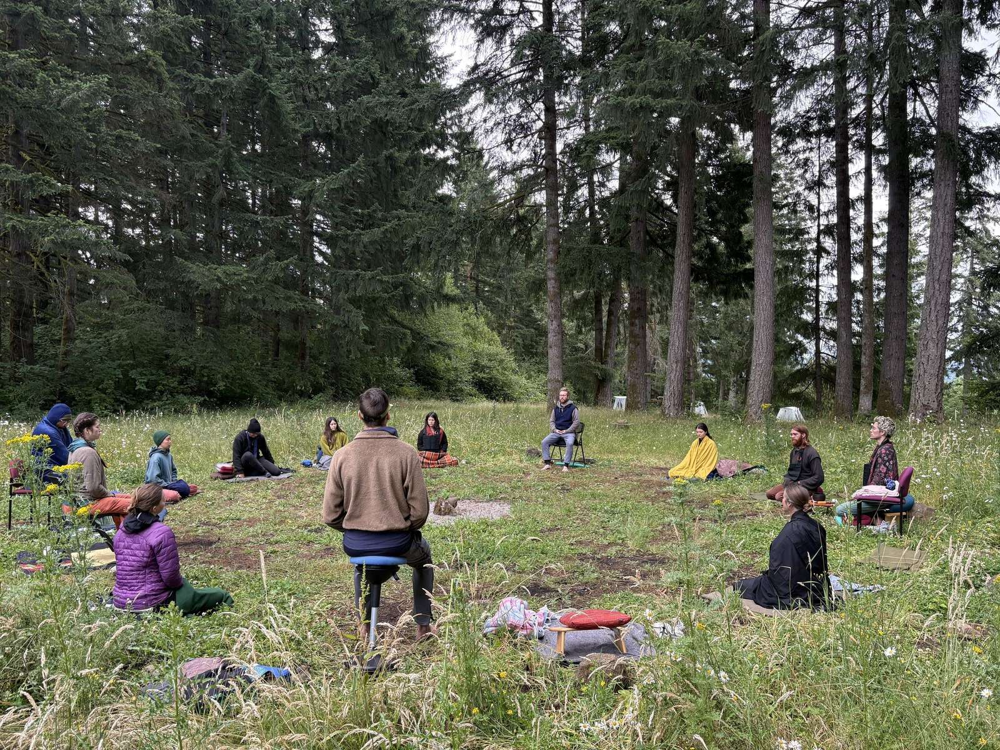
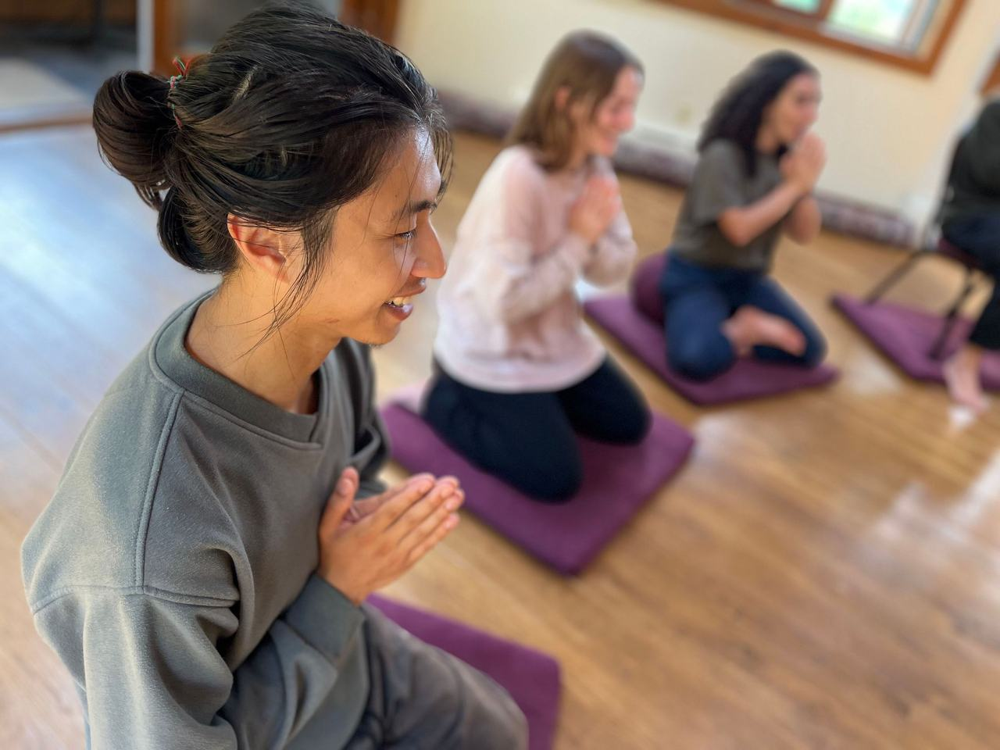
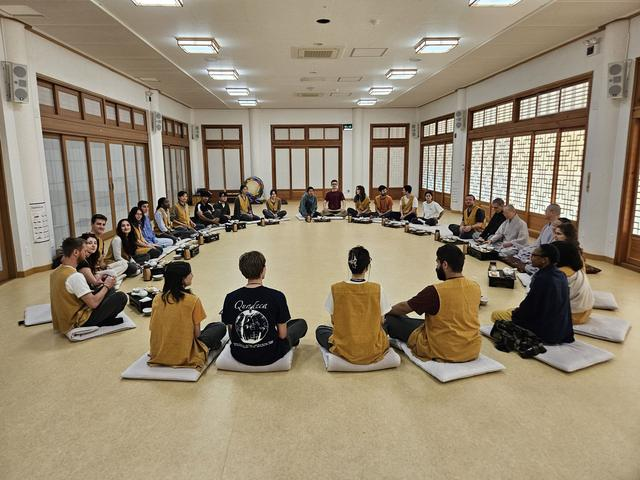
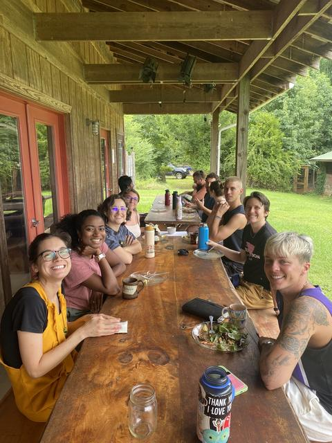
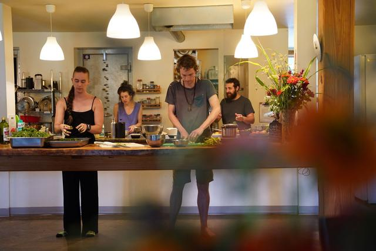
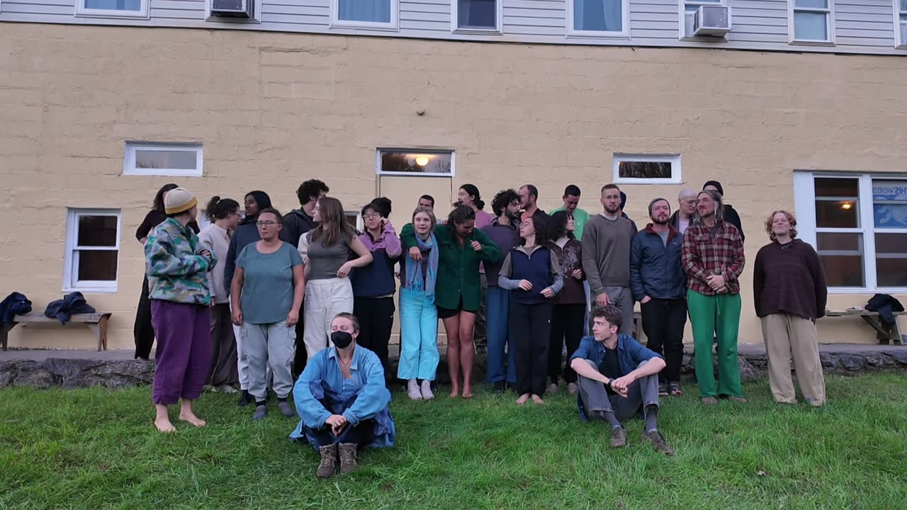

We connect young practitioners to Buddhist teachers and practice centers, and remove the conceptual, logistical, and financial barriers that keep people from going deep.
Dharma Gates is a grassroots nonprofit dedicated to opening pathways into formal meditation practice for young adults. We connect young practitioners to a variety of Buddhist teachers and practice centers, working to eliminate conceptual, logistical, and financial barriers to practice. We foster connections through which practitioners can cultivate compassion, resilience, and clarity to meet the unique challenges of our times.

Entered once in Retreat Guru, shown here automatically.
Target row style static example — real data comes from the embed above

Dharma Gates offers young adults (18–35) a range of immersive introductory experiences to meditation practice in a variety of Buddhist traditions — in person and online, with a wide breadth of facilitators and teachers, emphasizing accessibility, diverse perspectives, and depth of training. DG is writing new copy

Informal gatherings and relational practices that connect practitioners with each other and with teachers, so practice doesn't end when the retreat does. DG is writing new copy

We support young adults in developing the compassion and resilience that formal meditation training cultivates, so they can serve skillfully in a world that needs it. DG is writing new copy
Read the 2025 Annual Report → numbers from current Impact page — refresh
~40 full quotes on the current Testimonials page; these are abbreviated
Participants share, in their own words, what they found on retreat. draft copy

Dharma Gates offers donation-based Buddhist meditation retreats, classes, and events to young adults 18–35. We partner with authorized teachers and facilitators from a wide breadth of Buddhist traditions to allow for a diversity of perspective. We currently offer around 13 multi-day retreats per year around the USA, an ongoing monthly online practice support session, and several immersive daylong events annually.
To create the most welcoming environment possible: spaces where young people can practice among peers who share similar life questions and concerns. We also recognize the economic insecurities young adults often face, so we dedicate our resources to eliminating those financial barriers to practice.
All retreats are offered by donation — dana, a Pali word for generosity — so cost is not a barrier to practice. How our dana model works →
No. Our advisory board includes teachers from various branches of Buddhism, chosen deliberately for diversity so participants can discover what works best for them.
A warm peer environment with a structured schedule: 3–8 hours of daily meditation, talks, vegan meals, periods of silence, reduced technology use — and often, experiences of increased peace and loving-kindness. See upcoming retreats →
FAQ answers here are condensed from the live FAQ page; the WordPress build will carry the full text plus FAQ schema markup for search.
One form for the whole site, wired to Mailchimp. frequency: homepage says monthly, newsletter page says twice per month